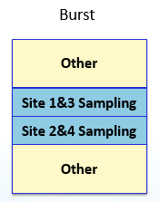

Serial/Semi-parallel execution of BADC as digitizer over sites
Before 2.4.4, SmartRDI does not support the usage of the BADC as digitizer for pins sharing a BADC over sites.
SmartRDI 2.4.4 supports the usage of BADC as digitizer with serial or semi-parallel execution
in one pattern burst in connection with
RDI_SEMI_PARALLEL_TEST_BEGIN()/RDI_SEMI_PARALLEL_TEST_END().
Both PPMU and BADC-HIZ are supported in this feature.
Example
We assume Pin "DATA36" shares one BADC on sites1 & 2 (pogo 103) and another BADC on sites 3 & 4 (pogo 104).
Example for a semi-parallel execution of digitizing by BADCs shared over sites. For pin "DATA36", sites 1 & 3 are executed at first followed by sites 2 & 4. Below are the example code as well as the code logic illustration.
SEMI_PARALLEL_CONFIG semi;
semi.group(1).add(1).add(3);
semi.group(2).add(2).add(4);
RDI_BEGIN();
RDI_SEMI_PARALLEL_TEST_BEGIN(semi);
rdi.dc().pin("DATA36").vMeas().samples(1024).FS(10 KHz).execute();
RDI_SEMI_PARALLEL_TEST_END();
RDI_END();
Functional changes
- Introduced in SmartRDI 2.4.4